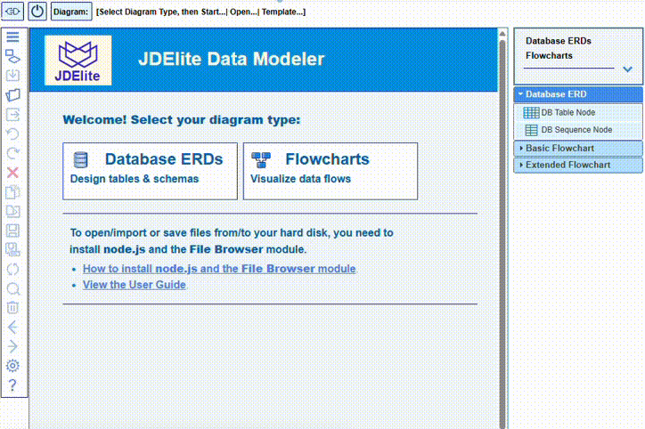

JDElite Data Modeler imports an SQL schema file from disk by parsing it to an ERD graphical model and displaying it on the screen. The model is stored in JSON format to disk and reopened for editing. The graphical ERD can be exported from the screen to a schema by generating the SQL schema script from the graphical model and storing it on disk.
Import from SQL schema
- From the start page, select Database ERD
- Select the database for your project
- Select Import SQL Schema from the list of options
- In the File Browser that opens up, navigate to the .sql file, select it and confirm the selection

Export to SQL schema
- Open the ERD of an already existing database ERD
- Click at Export DB button in the toolbar:

- In the Export to SQL Script dialog, you optionally can specify the output database schema name and whether you want it prepended to table names as prefix. Confirm any way
- In the File Browser that opens up, navigate to the desired location, enter the file name for the schema script, and confirm

NOTE: You can re-import the newly created schema script. You can expect to see again the same ERD that you just did export.